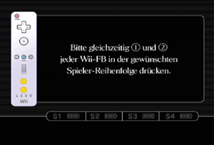

3 |
Vorbereitung des Controllers |
 |

Führe deine Hand durch die Handgelenksschlaufe und nimm die Wii-Fernbedienung sicher in die Hand.  Justiere den Stopper so, dass sich die Schlaufe nicht vom Handgelenk löst. 
Hinweis: Wenn der Stopper an der Handgelenksschlaufe über einen Hebel verfügt, dann schließe den Hebel, bis du einen Klick hörst, damit sich der Stopper nicht löst.
Die Registrierung ermöglicht der Um die Wii-Fernbedienung an einer Wii-Konsole zu verwenden, muss sie zunächst registriert werden. Es gibt zwei verschiedene Modi zur Registrierung: Standard-Modus – Der Standard-Modus wird verwendet, wenn weitere Wii-Fernbedienungen an der Wii-Konsole registriert werden sollen oder wenn du deine ursprüngliche Wii-Fernbedienung erneut registrieren willst. Nach erfolgter Registrierung bleibt die Wii-Fernbedienung so lange an der Wii-Konsole registriert, bis die Einstellungen durch Registrierung an einer anderen Konsole überschrieben werden. Einmal-Modus – Dieser Modus ermöglicht den vorübergehenden Gebrauch deiner Wii-Fernbedienung an einer anderen Wii-Konsole sowie den Gebrauch der Wii-Fernbedienung eines Freundes an deiner Wii-Konsole. Die in der Wii-Fernbedienung gespeicherten Einstellungen zur Registrierung im Standard-Modus werden dadurch nicht überschrieben. In diesem Modus bleibt die Wii-Fernbedienung mit der Wii-Konsole verbunden, solange sie eingeschaltet ist. Sobald die Wii-Konsole ausgeschaltet wird, geht die Registrierung an der Wii-Konsole verloren. Hinweis: Nur eine im Standard-Modus registrierte Wii-Fernbedienung kann die Konsole ein- oder ausschalten. Registrierung im Standard-Modus Hinweis: Stelle sicher, dass Batterien in die Wii-Fernbedienung eingelegt sind.Drücke den POWER-Schalter, um die Wii-Konsole einzuschalten. Öffne die SD Card-Steckplatzabdeckung an der Vorderseite der Wii-Konsole. Entferne die Batteriefachabdeckung von der Rückseite der Wii-Fernbedienung. Betätige kurz  Dieser Vorgang muss mit jeder weiteren Wii-Fernbedienung durchgeführt werden, die an deiner Wii-Konsole verwendet werden soll. Hinweis: Die Anzahl der blinkenden Spieler-LEDs zeigt die verbleibende Batterieladung der entsprechenden Wii-Fernbedienung an.
Schließe die SD Card-Steckplatzabdeckung an der Wii-Konsole und das Batteriefach an der Wii-Fernbedienung. Registrierung im Einmal-Modus Hinweis: Die Verwendung dieses Modus setzt die Registrierungskonfigurationen aller Wii-Fernbedienungen außer Kraft, bis die Wii-Konsole ausgeschaltet wird. Wird die Wii-Konsole danach wieder eingeschaltet, treten die Konfigurationen des Standard-Modus wieder in Kraft. Drücke Wähle die Option Wii-FB-EINSTELLUNGEN im HOME-Menü und danach die Option NEU ANMELDEN aus.
Drücke gleichzeitig  Die Spieler-LEDs blinken während des Registrierungsvorganges. Halte die Knöpfe gedrückt, bis das Blinken aufhört. Dadurch wird signalisiert, dass die Verbindung eingerichtet wurde. In der folgenden Abbildung wird beschrieben, was das Blinken anzeigt.
WICHTIG: Sollte die Registrierung deiner |
 auf einer Wii-Fernbedienung, die an der Wii-Konsole registriert ist.
auf einer Wii-Fernbedienung, die an der Wii-Konsole registriert ist.
 und
und  auf der Wii-Fernbedienung, die an der Wii-Konsole registriert werden soll. Die Reihenfolge, in der die Wii-Fernbedienungen registriert werden, entspricht der späteren Spieler-Reihenfolge während des Spiels.
auf der Wii-Fernbedienung, die an der Wii-Konsole registriert werden soll. Die Reihenfolge, in der die Wii-Fernbedienungen registriert werden, entspricht der späteren Spieler-Reihenfolge während des Spiels.
 |
 |
 |